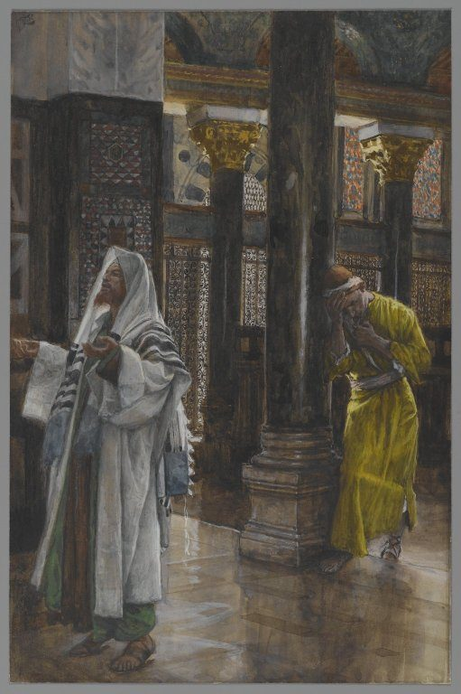

Luke 18 — The Mister Translation

Tissot lets a single stone column do the work of v13's ‘standing far off’ — the Pharisee stands in open light on the near side of it, upright and facing outward; the tax collector is pushed into shadow on the far side, bent double, his face turned fully away from both the viewer and the room. Neither man looks at the other; the painting draws the distance the parable states rather than showing two men praying side by side.

Translator’s Notes — verse by verse
⭐⭐⭐ “Give me justice” is the same root run four times in eight verses — nowhere else in the New Testament does it cluster this tightly. See the ekdikēsis dictionary entry: ekdikeō/ekdikēsis stands in vv3, 5, 7 and 8, the widow’s own plea and Jesus’ application both built from it. The word is a courtroom term for a legal due, not private revenge — the widow is not asking the judge to hurt her adversary, only to rule in her favor, and Jesus’ argument moves from a corrupt human court granting that much to God, who is neither corrupt nor reluctant, granting it ‘speedily.’ ⚠ The shelf splits on exactly this point: the KJV and ASV both print ‘AVENGE me of mine adversary’ at v3, and the Douay-Rheims agrees (‘avenge me of my adversary’) — a word that leans toward retaliation; the Geneva (‘do me justice against mine adversary’), the NWT 1984 and the NIV all print ‘justice’ instead, which this translation follows as the tighter match for a word built on dikē.
⚠ “Wear me out” is a boxing term, and its only other New Testament use is aimed the opposite direction. See the hypōpiazō dictionary entry: literally to strike under the eye, to blacken it. Here it is the judge’s own complaint — worn down by a widow’s persistence, as if by repeated blows. The word’s one other New Testament appearance has Paul ‘pommel’ his own body like a boxer in training (1 Corinthians 9:27, not yet on these pages) — the same verb, once landed on someone else by sheer nagging, once self-inflicted as discipline.
⚠ The judge is not a model of God — he is the opposite of one, argued from the lesser to the greater. Jesus never says God is like this judge; he says that even THIS judge, who fears no one and respects nothing, eventually gives in, so how much more will God — who is neither unjust nor unmoved — act for those who cry out to him. The chapter’s own last line turns the parable back on its hearers: the question is not whether God will act, but whether faith will still be there to meet him when he does.
⭐⭐⭐ “Justified” here answers “justify yourselves” two chapters back, with the same Greek verb pointed in the opposite direction. See the dikaioō dictionary entry: the tax collector ‘went down to his house having been justified’ — a passive, its agent never named though the whole scene has made it obvious — while Luke 16:15 (already on these pages) told a very similar audience, ‘you are the ones who JUSTIFY yourselves in the sight of others, but God knows your hearts.’ One is a verdict a man pronounces on himself, aloud, in his own prayer; the other is a verdict pronounced on a man from outside, and never claimed.
⭐⭐⭐ The closing two-verb formula is not new to this scene — this Gospel has already used the identical sentence once, at a different table. See the tapeinoō and hypsoō dictionary entries: ‘everyone who exalts himself will be humbled, and the one who humbles himself will be exalted’ already closed a dinner-table scene at a Pharisee’s own house (Luke 14:11, already on these pages), word for word except for the conjunction. There it was etiquette advice to guests jockeying for the best couch; here it is the verdict on two men’s prayers — the same rule, spoken once about where to sit and once about how to pray.
⚠ The Pharisee’s own numbers outperform what the Law required, and the parable never disputes them. Fasting twice a week and tithing ‘everything’ he acquires both exceed the Mosaic minimum (one fast, on the Day of Atonement; a tithe on specific produce) — nothing in his self-report is false, exaggerated, or even irreligious. The parable’s target is not his accounting but his posture: a prayer that spends its words comparing himself favorably to ‘this tax collector’ standing in the same room, rather than asking God for anything at all. ⚠ Most of the shelf keeps ‘justified’ at v14 — the KJV, ASV, Geneva and Douay-Rheims all agree — but The Living Bible breaks from the pack entirely, paraphrasing the verdict as ‘this sinner, not the Pharisee, returned home FORGIVEN,’ a word that names an effect of justification without using the courtroom term itself.
⭐⭐⭐ “Infants” is Luke’s own word here, and Matthew and Mark both say something else. See the brephos dictionary entry: the ones brought to Jesus are brephē, the identical noun this Gospel already used for John leaping in Elizabeth’s womb and for the baby in the manger — where Matthew’s and Mark’s own tellings of this same scene both say paidia, ‘children’ (Matthew 19:13; Mark 10:13, both already on these pages), a word that covers a wider age range. Luke narrows the age of the identical crowd by a single word choice, then switches to paidion himself in the very next verse (v16) — both words inside four verses, naming the same group two different ways.
⚠ The disciples’ rebuke and Jesus’ counter-command use the same verb, epitimaō, ‘rebuke’: the disciples rebuke the ones bringing the infants: nowhere does the text say they rebuke the infants themselves, only the adults presenting them, which is who Jesus overrules.
⭐⭐⭐ Matthew, Mark and Luke each identify this man differently, and none of the three agree. See the archōn dictionary entry: Luke alone calls him a archōn, a ‘ruler’ — the same title already used of the Pharisee host at 14:1 and of Nicodemus at John 3:1 (both already on these pages). Matthew’s own telling of this identical scene instead calls him a neaniskos, a ‘young man’ (Matthew 19:20, 22, already on these pages), a detail neither Mark nor Luke has; Mark gives him no title at all, only ‘a man’ (Mark 10:17, already on these pages). ⭐ Matthew’s telling also quietly rewrites the opening exchange: where Mark and Luke both have the man call Jesus ‘Good Teacher’ and Jesus answer, ‘Why do you call me good? No one is good except God,’ Matthew has the man ask about a ‘good thing’ to do and Jesus answer, ‘Why do you ask me about the good? One there is who is good’ (Matthew 19:16–17) — the same underlying question about goodness, worded so that it is never quite put to Jesus himself.
⚠ Luke’s own order of the commandments is reversed against both other Synoptics, and Mark alone adds a fifth. Luke lists Do not commit adultery, Do not murder, Do not steal, Do not bear false witness — adultery before murder. Matthew keeps the more familiar order, murder first (Matthew 19:18, already on these pages), and Mark agrees with Matthew’s order and then adds one more command no other Gospel has here at all: ‘Do not defraud’ (Mark 10:19, already on these pages) — a commandment with no fixed slot among the traditional ten, read by most commentators as folding in the tenth-commandment prohibition on coveting a neighbor’s property. Three tellings of one conversation, and no two of them list the Law in the same order.
⭐⭐⭐ Matthew, Mark and Luke tell the identical proverb with three different Greek words for the needle’s eye, and two for the needle. Matthew’s is ‘the hole (trypēma) of a rhaphis’, an ordinary sewing needle (Matthew 19:24, already on these pages); Mark’s is the same needle with a different word for its hole, ‘the trymalia of the rhaphis’ (Mark 10:25, already on these pages); Luke alone changes the needle itself, to belonē, with a third word for its eye, trēma — belonē being a needle in the sense used by a surgeon or physician rather than a household sewing needle. Ancient tradition names Luke ‘the beloved physician’ (Colossians 4:14, not yet on these pages; already noted at the hydrōpikos entry, 14:2) — a detail this one word choice fits without proving, since belonē was also simply an available literary synonym in Koine Greek and not exclusively medical vocabulary.
⚠ The hearers’ own question — ‘then who can be saved?’ — assumes wealth was the ordinary sign of God’s favor, which is exactly why the image lands as a shock: if the visibly blessed cannot enter by their own means, no one’s own means will do it. Jesus’ answer does not soften the image; it relocates the impossible task from human effort to God’s own action.
⚠ Luke’s own promise is not the fixed “hundredfold” that Matthew and Mark both use for this saying. Matthew and Mark both promise hekatontaplasiona, literally ‘a hundred times as much’ (Matthew 19:29; Mark 10:30, both already on these pages); Luke’s own word is pollaplasiona, ‘many times over’ — a real multiple, but not fixed at a specific number. ⭐ Mark alone also names a cost folded into the reward itself: whoever leaves house, family or fields for the gospel ‘will receive a hundredfold now in this time … WITH PERSECUTIONS’ (Mark 10:30) — a clause neither Matthew nor Luke carries, so that of the three Synoptic promises, only Mark’s comes with its own warning attached.
⭐⭐⭐ This is the third of this Gospel’s three passion predictions, and each one is met with a different, and worse, kind of incomprehension. The first (9:22, already on these pages) draws no recorded reaction at all. The second (9:44–45, already on these pages) is met with concealment and fear — ‘it was concealed from them so that they could not perceive it,’ and they are afraid to ask. This third prediction is the most detailed of the three, naming the Gentiles, the mocking, the flogging and the third-day rising outright — and it draws the heaviest response yet: THREE separate clauses of non-understanding stacked in one verse (‘they understood NONE of these things’; ‘this saying was HIDDEN from them’; ‘they did not KNOW the things that were said’), where the second prediction had one. The plainer the prediction gets, the less the text says they grasped of it.
⭐⭐⭐ Luke places this healing on the way INTO Jericho; Mark’s parallel places it on the way OUT. See the Bartimaeus encyclopedia entry, where Mark names this same beggar and sets the scene as Jesus ‘leaves Jericho’ (Mark 10:46, already on these pages); Luke has him ‘drawing near’ the city instead. The divergence is sometimes explained by the existence of both an Old Testament mound and a separate Herodian city near it, which could put ‘approaching Jericho’ and ‘leaving Jericho’ only a short distance apart depending which settlement is meant — reported here rather than resolved.
⚠ “Jesus of Nazareth” here uses a Greek word this Gospel uses nowhere else. The crowd’s answer names him Iēsous ho Nazōraios; everywhere else in this Gospel where the same idea appears, it is Nazarēnos instead — the unclean spirit’s address at 4:34 (already on these pages) and the Emmaus travelers’ description at 24:19 (already on these pages). Both words point to the same town and both are translated ‘Nazarene’ here; this is simply the one place in Luke’s own Gospel where the alternate spelling appears.
⭐⭐⭐ “Son of David” is spoken to Jesus exactly twice in this Gospel, both times in these two verses, and nowhere else. Luke has already named David seven times before this chapter — the angel’s promise of ‘the throne of his father David’ (1:32), the ‘city of David’ at Jesus’ birth (2:4, 11), David’s own example of eating the bread of the Presence (6:3, already on these pages) — and a scholarly puzzle about David’s own son waits three chapters ahead (20:41–44, already on these pages); but never once, before this beggar, does anyone call Jesus ‘Son of David’ to his face. Mark’s parallel account gives its own blind man the same two cries, the second of them — ‘Son of David, have mercy on me’ — identical word for word to Luke’s own v39 (Mark 10:47–48, already on these pages).
⚠ “Have mercy on me” already sounded in this Gospel’s previous chapter, in a different mouth. The identical verb, eleeō, was the ten diseased men’s own cry one chapter back — ‘Jesus, Master, have mercy on us’ (17:13, already on these pages) — there addressed with the title epistata, ‘Master,’ that this Gospel otherwise puts only in the mouths of the Twelve; here with a messianic title a beggar has no business knowing to use, and refuses to stop using even when the crowd tries to silence him.
⭐⭐⭐ “Your faith has saved you” pays, for the third and final time, a promise this library made eleven chapters ago. The note at Luke 7:48–50 (already on these pages) named this verse by number in advance: hē pistis sou sesōken se would recur three times, once each for a healing. It came at 8:48, again at 17:19, and now here, the third and last — the identical sentence, closing the identical kind of scene, spoken this time to a man whose sight is the very thing the verb sōzō (see the sōzō dictionary entry) never quite lets a reader separate from healing. ⚠ Most of the shelf resolves the ambiguity by choosing ‘healing’ outright: the NIV and TLB both print ‘your faith has HEALED you,’ and the ASV and Douay-Rheims both print ‘hath made thee WHOLE.’ Only the KJV and the Geneva keep ‘hath SAVED thee,’ the reading this translation follows for consistency with the same clause at 7:50 and 8:48.
⭐ “Recover your sight” is one Greek verb, spoken three times running in three different forms. See the anablepō dictionary entry: the beggar’s own request, Jesus’ command, and the narrator’s report of the healing are all the identical verb — anablepsō (v41), anablepson (v42), aneblepsen (v43) — request, command and fulfillment inside three verses, without the text ever needing a second word for what happens.
Patterns worth carrying forward
Where this translation keeps the words exact / distinct: infants for brephē (v15), the identical word already used of John in the womb and of the baby in the manger, kept apart from paidion in the next verse (v16); justice for the ekdikēsis family (vv3, 5, 7, 8), a courtroom due rather than private vengeance; justified for dedikaiōmenos (v14), the same verb already rendered ‘justify’ at Luke 16:15, pointed the opposite direction; and exalt / humble for hypsoō / tapeinoō (v14), the identical two-verb formula already used at Luke 14:11.
Echoes paid. The promise made at Luke 7:48–50, that ‘your faith has saved you’ would recur three times, is now complete: 8:48, 17:19, and here at v42 — the third and last. And the self-justification named at Luke 16:15 is answered at v14 by the same verb, run the other way.
Echoes planted. The sykomorea that stood apart from the sykaminos of 17:6 is climbed next chapter — a short man named Zacchaeus, unable to see over the crowd (19:4, already on these pages). A nobleman entrusts ten servants with ten minas before leaving for a kingdom his own citizens refuse him (19:12–27, already on these pages), and the road into Jerusalem this chapter has been climbing toward since v31 is finally walked, down from the Mount of Olives, to a shout some in the crowd asks Jesus to silence (19:28–40, already on these pages).
Next in sequence: Luke 19 — a wealthy, short tax collector climbs a tree to see over a crowd and is called down by name; ten servants are tested with ten minas while their master is away claiming a kingship his own people reject; and Jesus rides the last stretch into Jerusalem to a shout of praise some Pharisees in the crowd want silenced, then weeps over the city that will not know the things that make for peace.